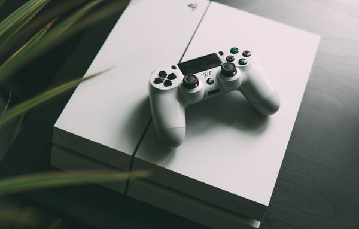

XBOX
- Price: 50 kr an hour, 600 kr for one day
We have two xbox one's, both of which have 4 controllers available for use. We have a lot of games available with us,
but it is also possible to log in at an already existing user. The game area has several seats, where there is room
for a group five people at each station. If you have any requests for games you would like to see on our
consoles please contact us and we will se what we can do.

Playstation 4
- Price: 50 kr an hour, 600 kr for one day
If you prefer PlayStation over XBOX we also have two PlayStation 4s available. Both of the PlayStations have a separate
area with several seats. We also have several games available on these consoles, but you also have the option log in
to an existing account. If you have any requests for games you would like to see on our consoles please contact
us and we will see what we can do.
Gaming PC
- Price: 80 kr an hour, 800 kr for one day
In our café we have a separate area for gaming computers. There are a total of 12 top of the line gaming computers.
All the classics like league of legends, CS GO, world of warcraft, apex legends and many more are available on the computers.
If you have any questions please contact us on our email address or phone number which you will find on our about us page above.